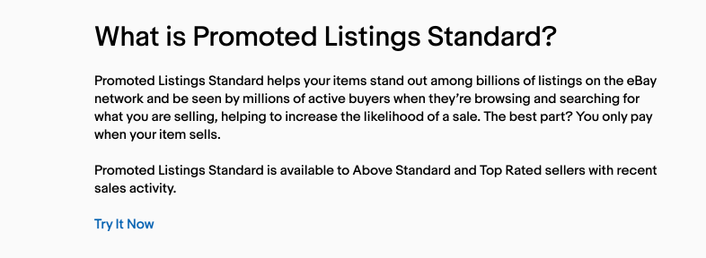
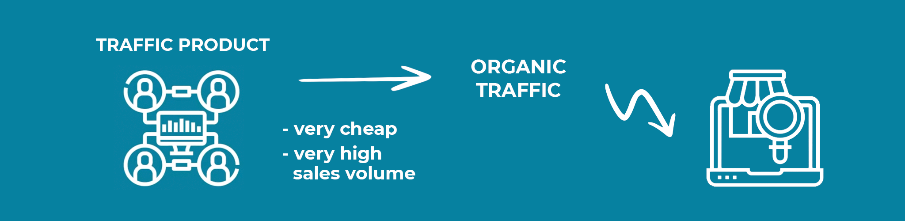
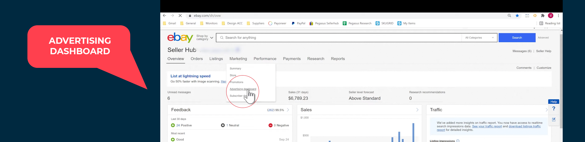
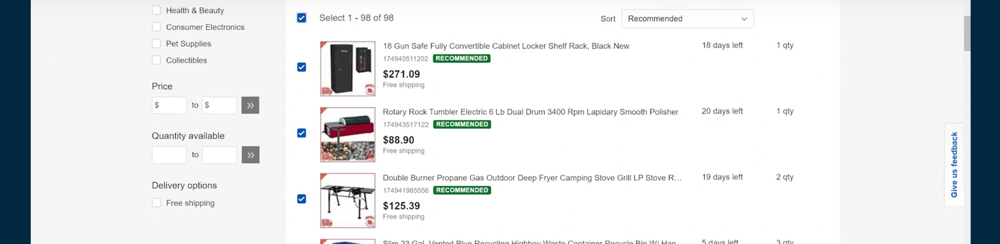
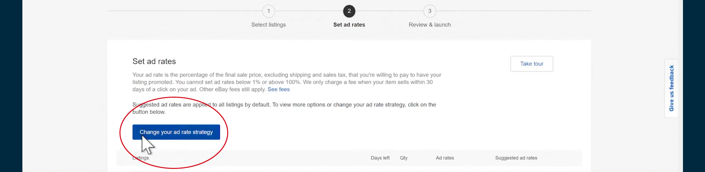
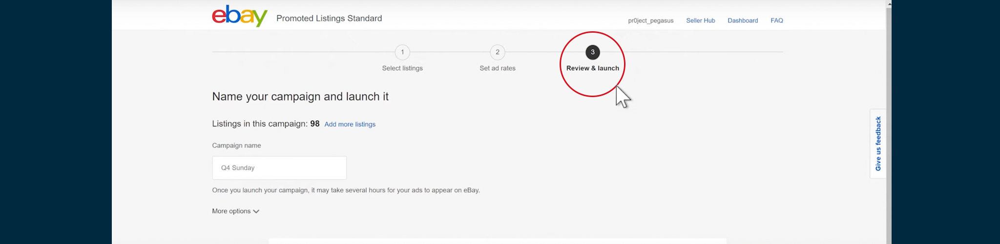
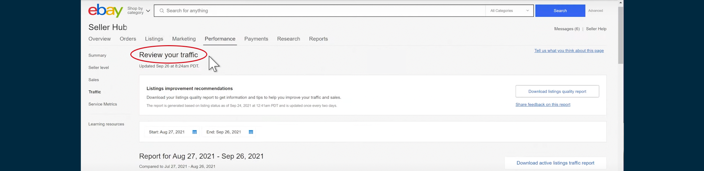

5 insider tips to get the most out of eBay Promoted Listings
Nahar Geva
13 Oct 2021

Promoted eBay listings allow new and seasoned sellers to leverage the power of paid traffic to get more sales to your eBay store. Doing this correctly can take a store from making no sales, to making consistent sales with a few clicks of the mouse.
With all of this said, it isn't as simple as just turning on promoted listings and waiting for the traffic to flow in, there is a particular strategy that we like to employ that allows us to know when and why to use promoted listings, and when to give it a skip completely.
This article is going to run through our process to successfully using eBay promoted listings to scale ours stores, and will detail 5 insider tips to get the most out of eBay promoted listings.
Article Overview
#1: Set your goals
#2: Make your listings stand out
#3: Promote trending listings
#4: Upload listings in bulk
#5: Review detailed reporting
How to set up promoted listings
Step 1: Visit advertising dashbaord
Step 2: Chose campaign type
Step 3: Select ad rate
Step 4: Promoted listings bidding strategy
Step 5: Check your stores traffic
Do promoted listings work
Who are eligible for promoted listings
How to promote fixed price listings
Benefits of eBay promoted listings
Difference between organic listings and promoted listings

What are eBay promoted listings?

According to eBay, the promoted listings standard helps your item stand out among billions of listings on the eBay network and be seen by millions of active buyers when they are browsing and searching for what you are selling.
When you use eBay's promoted listings standard, your product will almost always be the first to turn up in search results when users search for a certain keyword, especially when compared to organic listings.
This means that when you promote listings, you will attract more buyers, thus more sales. We haven't even touched on the best part yet. The best part is that you only pay for your promoted listing once you actually make a sale.
Our top 5 tips to winning with eBay promoted listings
Now that we've touched on the the basic questions about promoted listings, let's dive into our insider tips so that you can maximize your results from your promoted listings standard ads!
Don't want to read? No worries, you can watch the full video here
Tip #1: Think about the goals you want to achieve with Promoted Listings
For the first tip, the we want you to dive head first into promoted listings, with the confidence to know that we are here to guide you through the process and give you knowledge to do it successfully!
So, the first thing on your mind when you start out with promoted listings is to have a definitive goal when you use promoted listings and set up campaigns that reflect these goals.
This can work, whether it's by brand category, price level, or seasonal, just make sure that you group them together because it will make it easier to measure performance and visibility.
Tip #2: Stand out from the rest using great listings
Standing out from your competitors is a MUST to compete in eBays competitive landscape. How? Well, we've tried to make this process as simple as possible for you. You can check out this video if you want to find out how to make your listings stand out, but we touch on a few of these points below.
How do I make a great eBay listing?
Good product title
Of course, your product wouldn't attract potential customers without a strong title. A strong title should be concise and straightforward which includes all of the keywords that buyers are actively searching for.
Also, improving your title with tools like Zik’s title builder is a must.
Maximizing all of the 80 characters given to us and most importantly, always check the strength of the title and know where to improve according to the seasons, holidays, etc.
Quality eBay Market Research
The products you choose for your store are the most important thing for the profitability of your business.
Knowing how to examine a product's quality, sales volume, profitability without ever seeing the product requires a lot of learning and experience from you.

It’s worth taking a look as there are hundreds and thousands of suppliers to choose from, and countless products to sell, which is exactly why you have to choose the best option among them all.
As you can see, the Zik Analytics Product Research tool is an amazing tool! It offers everything you need to build a selling machine on eBay. Take advantage of it today!
Traffic Listings & Strategies
As with any store, sometimes you need to know how to attract customers to your store. "Traffic products" is one of the common ways. But, what is a traffic product?
A traffic product is a product that, in most cases, will be a product that is very cheap and has a very high sales volume. Such a product will lead to organic traffic to your store, which, in many cases, will make customers buy more products from you even though they came through the same category but from another product. You can find out more about traffic products to increase eBay sales here.

Controlled loss Strategy
A strategy that we teach a lot on is called the Controlled loss Strategy
This strategy is essentially the same as the traffic product strategy above, however we are selling these products with an expected (minimal) loss. The difference is that in this strategy you will often use more expensive products to attract more relevant customers while utilizing promote listings.
Item Description
A detailed product description is a vital part of every product page.
On the product page, you usually see a good picture of the product, and in many cases, this picture is different from the main picture. You also see an explanation of the product and its attributes, and sometimes an easy explanation of use. You can also see all of the seller's policies on payment, Shipping, Returns And all the options offered to your customers.
The product description is basically an add-on that adds to every sales page to make it look more professional.
Store Branding
Branding your store is a long-term job that will build up your reputation, and make customers return more and more towards your business and products.
Tip #3: Promote listings that are trending or in-demand inside the eBay marketplace
This one is a bit of a no brainer, but listing products that have proven to sell well is the best way to ensure that you are getting a higher conversion on your promoted listings. How do you find profitable products?
We are biased, but we believe ZIK Analytics is the quickest and surest way to do exactly that. Check out the following video if you aren't sure how to use ZIK Analytics to find profitable products.
(image source: use the thumbnail of the youtube link)
Tip #4: Upload in bulk
For our next tip, if using promoted listings on eBay really works for you, it’s possible to upload them in bulk using a CSV file. There’s no complicated rules and, unlike CPC methods, you only pay if you make a sale.
eBay also offers a handy ‘Recommended items’ feature in its Promoted Listings Standard campaign manager found in the seller hub.
This highlights which organic listing are most likely to benefit from promotion. If an ad is doing well, you can even promote it internationally. Sellers can advertise on any eBay marketplace that they deliver to.
You also have complete control over the length of your campaigns. Stop or start your ads whenever you want so you also have full control over your promoted listings standard fees.
Tip #5: Detailed Reporting
For our last tip, we recommend that you use the detailed reporting section of your seller hub.
What's inside my detailed reporting?
Detailed performance data is readily available to optimize your campaign strategies. Your seller dashboard contains:
✔️ The number of impressions your promoted ads have generated
✔️ Clicks and impressions from potential buyers on your promoted listing
✔️ The total number of promoted listings that led to a sale
✔️ The ad rate for every item and the ad fee you’ll be charged with
✔️ Total promoted items purchased and amount earned
You should closely monitor these promoted listing metrics when experimenting to perfect your campaigns!
How to set up eBay promoted listings
One of the first questions you may have is should you put your ad rate up or down and do you need to adjust ad rates? To answer this, let's go ahead and actually do the promoted listings campaigns from start to finish.
Step 1: From the seller hub, go to your advertising dashboard

Starting from our seller hub from our dashboard we're gonna go into marketing, which is at the top of the page, and from there, we're gonna go ahead and click advertising dashboard.
Step 2: Choose your Campaign Type
For this next step, you can see that you have three standard options before activating promoted listings:
- 🙂 Simple
- 🛢️ Bulk
- 🤖 Automated
Now, for this guide, we're going to use the simple option, but don't worry - this doesn't mean that the benefits of using promoted listings will also be simplified!
We're going to use the simple setup because this is the best option for sellers who prefer a guided experience, attracting buyers using visual listings and to automate suggested ad rates, and lastly, flexibility to select across different listings and ad rate strategy.
After this, let's go ahead and click on "Create Campaign".
Step 3: Select your ad rate

After clicking on the create campaign, we're actually going to select all of your listings on the seller hub.

Then, at the bottom part of the page, you're now going to click on "set ad rate".
On the next page, we are now going to click on "change ad rate strategy". We're going to use low promoted listings and ignore the "apply suggested ad rate" and the "adjust suggested ad rate options" and select the "apply single ad rate".
Since we just want to simply attract buyers to your eBay listings, we are going to set the ad rate to 2.5 percent for all of your listings' ad fee. Once you've done all that, click apply and you will be greeted with a success screen the confirms your promoted listings.
There you can see that all of your products have a 2.5 percent ad rate applied to them as well as the section where the ad fee of the ad rates is calculated and where the average sold ad rate may be seen.
You can also see on the right side of each product the suggested ad rates for that particular product, but nobody really goes there.
Step 4: Promoted listings bidding strategy
Next, on the bottom right-hand side of your promoted listings dashboard, click on review which will lead you to this screen.

During the holiday seasons, we just want to get as many impressions as we can! Here, you can go ahead and give your campaign a name, we're gonna go with "quarter-four Sunday" but you can practically name your promoted listings campaign anything you want. After that, just click on "Launch".
Step 5: Check your store's traffic
After launching your promoted listings campaign, scroll to the bottom of your advertisement dashboard and select your campaign or any individual promoted listing to see the relevant statistics that you can use to monitor which of your promoted listings are doing well.
You can also select traffic on the "performance" drop-down and see your traffic dashboard.

So we're going to go ahead and look at all of the data, from impressions to page views to quantity sold, and so on. And here, we also have the organic impressions as well as the promoted impressions. You can see the percentage for those as well.
Now on the graph, you can see that the green part of it represents the promoted listings and the blue part of it represents the organic listings so that you can examine the effectiveness of your promoted listing. Then we have our page views down below, and then below that, we have the quantity sold.
Final thoughts
Using eBay promoted listings as an above-average or a top-rated seller can definitely increase your chances of attracting customers because of its ability to bring up your products at the top of the search results.
With all of this said, you should keep in mind that your profit margins cover the cost of your ad fees so that you aren't left in the negative after accounting for all fees (unless that is part of your strategy).
You can control this by setting your ad rates low and then increase them one percent at a time. Even the minimum of 1% bid can increase eBay sales.
Later on, if you think you’re paying too much for an eBay promoted listing, you can reduce your ad fees by one percent and then monitor your sales accordingly. You can tailor your campaigns to suit your personal business goals. Just remember to think in terms of 30 day windows.
Frequently-Asked-Questions
Does promoting a listing on eBay work?
Now, people always wonder if promoted listings really work. The answer is a resounding yes! It is important to use a tailored strategy to your product costs and sales price.
Keep in mind that you only pay once the product sells, and you set your ad fee before hand. Because you always know what your fees will be, you can plan your prices accordingly.
Who is eligible for promoted listings on eBay?
eBay has limitations for who can use eBay promoted listings on their eBay store. Only the following sellers can promote their eBay listings:
- Above Standard Sellers
- Top-Rated Sellers
Don't let that deter you though! The reason that the eBay site limits who can advertise their products using promoted listings is because they want to ensure that trusted sellers who sell quality products are getting more exposure by their products showing up more often to consumers.
If you aren't quite there yet, you can always take steps to increase your eBay seller rating by providing stellar customer service and selling quality products, so that you too may reap the benefits of the extra sales that can occur from advertising your eBay listings!
I have an above-average/top-rated eBay store, how do I promote fixed-price listings?
Once you qualify for eBay's standards for an above-average or top-rated seller then you can also use promoted listings! Not quite there? No worries - eBay recalculates your seller rating on the 20th of every month, so you can always work your way into their good graces.
Now in terms of how you price your fixed fee item, a great strategy is to add the promoted listings fee on top of your product final sale price. This way you are not eating away at your profit, and though you may see fewer conversions from some customers due to the higher price - overall you should see an increase in sales due to the increased exposure to your product.
This way you can offset your promoted listing ad fees, by absorbing it in the final sale price. your losses from the promoted listings cost and set your product's prices based on the promoted listings fees!
What are the benefits of using eBay's Promoted listings?
Boost visibility
Your items are more likely to sell when more people see them. Promoted Listings Standard puts your items in front of more customers, and therefore, boosting visibility by up to 36 percent!
Pay only for sales
You’re not charged until a buyer clicks on your promoted listing and purchases the promoted item within 30 days.
Guided set-up
eBay's integrated guidance tools help take the guesswork out and suggest which items to promote and at what cost. Even better though, availing and using Zik Analytics' tools at your disposal will also help you get the most out of your product listings faster and easier!
What is the difference between an Organic Listing and a Promoted listing?
Organic Listing
An organic listing or an organic product is basically the search results that appear below the advertisements in a normal search engine query. These listings or websites appear based on their content, relevance, and overall quality.
Promoted Listing
On the other hand, a promoted listing or a paid listing is the advertisements that always appear on top of the search results. Just like what we have talked about in the earlier parts of the article, promoted listings appear on top because they have ad fees which, in this case, is based on eBay's ad rates.
Here's exactly how to find Hot eBay Niches

By entering your email, you'll be subscribed to ZIK Analytics newsletter. You can unsubscribe any time.
Recent Posts:

eBay SEO: A Step-By-Step Guide to Ranking on eBay 23 Oct 2021
5 insider tips to get the most out of eBay Promoted Listings 13 Oct 2021

How Omer Got to $185K Sales In His Dropshipping Store Using ZIK Analytics & PriceBackers 12 Oct 2021

The Ultimate eBay Stealth Account Guide for 2021 05 Oct 2021

6 Tips to Increase your eBay Seller Rating Quickly 28 Sep 2021